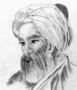

1011 yılında Mısır halifesi, Nil Nehri’ne büyük bir baraj inşa etmesi için genç bir memuru görevlendirdi. Su baskınları ülke tarımını kesintiye uğratıyordu. Halife, inşa edilecek barajın yıllık sel baskınlarını engelleyebileceğini ummuştu. Bu iş için görevlendirdiği kişi, İbn-i Al-Haytham’dı (965-1040). Haytham o güne kadar İslam dünyasının en parlak matematikçilerinden biri olarak ün salmıştı.

Baraj yapılması düşünülen alana varan İbn-i Al-Haytham, kısa sürede halifenin düşüncesinin hiç de uygulanabilir olmadığını fark etti. Dünyanın en güçlü akan nehirlerinden biri olan Nil, her türlü barajı birkaç gün içinde yıkabilirdi. Ne var ki Al-Haytham, zalimliği ve garip davranışları ile tanınan halifeden korktu. Bu görevi yerine getirmek istemezse onu cezalandıracağını biliyordu.
Neyse ki Al-Haytham halifenin hışmından korunmanın bir yolunu buldu. Sonraki on yıl boyunca deli taklidi yaptı. Ev hapsinde tutuluyorsa da hiç değilse canını kurtarabilmişti. Bu süre içerisinde bilim tarihinin en önemli kitaplarından birini olan Optikler’i yazdı.
Al-Haytham, Irak’ın Basra şehrinde doğmuştu. Eğitimini Bağdat’ta tamamladı. Yedi ciltten oluşan eseri Optikler ışığın davranışlarına ve insan gözüne ilişkin geniş kapsamlı bir araştırmadır. Al-Haytham, ışığın bir doğru üzerinde ilerlediğini keşfeden ve gözün fonksiyonlarını ortaya çıkaran ilk kişidir. İlk kamera obskurasını da o yapmıştır. Kitap aynı zamanda Al-Haytham’ın deneylere verdiği önemi göstermesi açısından da büyük önem taşımaktadır. Bu konunun üzerinde durması, bilimsel yöntemin gelişimine katkı sağlamıştır. Optikler 12. yy’da Latince’ye çevrildiğinde Roger Bacon (1214-1292) gibi Avrupalı bilginlerin beğenisini kazandı. Bu kitap sayesinde yazar “Optiklerin Babası” unvanıyla anılmıştır.
1021 yılında halifenin suikaste kurban gitmesinden sonra Al-Haytham ev hapsinden kurtuldu. Hayatının kalan kısmında deneylerine devam etti. Fizik, astronomi ve tıp alanında yaklaşık iki yüz kitap yazdı. Aynı zamanda, başka kitapların el yazısı kopyalarını çıkararak hayatını kazanıyordu. Yetmişli yaşlarındayken Mısır’da öldü.
Ek Bilgiler
1- Al-Haytham’dan sonra 1902 yılına kadar, yani yaklaşık dokuz asır boyunca kimse Nil nehrinin üzerine baraj yapmayı başaramamıştır.
2- “Alhazen Problemi”, adını Al-Haytham adının Latince çevirisinden alan ünlü bir matematik sorunsalıdır. Yüzlerce yıl boyunca matematikçiler bu problemi çözmek için uğraşmışlardır. Soru şudur: Herhangi bir kaynaktan gelen bir ışık demetinin yansıtıldığı küresel bir aynanın üzerindeki herhangi bir noktanın tam yerini tespit etmek mümkün müdür? Problem Oxford’lu bir matematikçinin soruyu çözebilecek bir yöntem geliştirdiği 1997 yılına kadar çözülememiştir.
3- ABD’nin 2003 yılında Irak’ı işgalinin ardından basılan 10 bin Irak dinarı değerindeki yeni banknotunun üzerinde Al-Haytham’ın portresi bulunmaktadır.